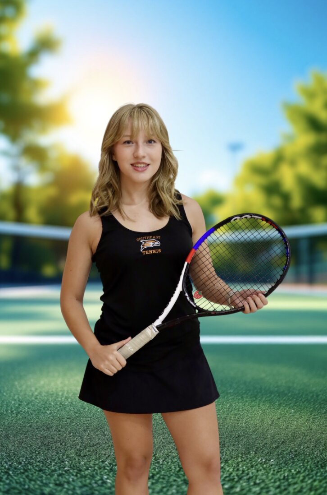
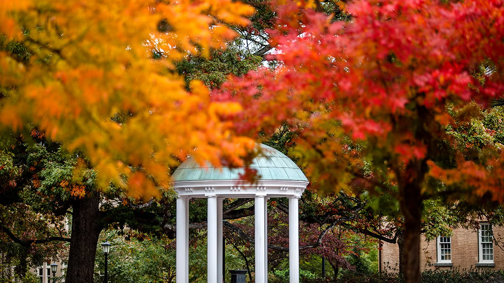

I am a First Year undergraduate student at the University of North Carolina at Chapel Hill set to graduate in Spring, 2030. While at UNC, I plan on graduating with a B.S. in Biology and a Chemistry Minor. Additionally, I graduated from Southeast Guilford High School in Greensboro, North Carolina with a 4.0 GPA, over 300 service hours, and as a Junior Marshall award recipient. Subsequently, I was admitted to UNC Chapel Hill to pursue a Bachelors of Science in Biology and a career path in Ophthalmology. My interest in ophthalmology stems from an appreciation for analyzing such a small yet complex organ and discovering conditions that can affect the entire body. Moreover, the B.S. Biology track at UNC provides a strong foundation of medical understanding that will lay the groundwork for my future in ophthalmological studies.
Furthermore, in the Winter of 2024, I founded and led a non-profit under Operation Christmas Child and held a Samaritan’s Purse Shoebox Drive for my hometown. Consequently, I raised over $1,000, and sent over 50 shoeboxes of supplies and hygiene items to kids worldwide. Not only did this opportunity provide me with ample inspiration, but enabled my acceptance into Psi Alpha Psychology Honor Society, a prestigious organization with only two chapters in the state. Within PAPHS I served as the secretary, treasurer, and social media manager. In holding three executive board positions within an internationally recognized honor society, I learned to persevere and adapt to a heavy workload.
As a result of gaining productive experience and leadership, I am in the process of applying to a number of summer internships related to my field of interest, including but not limited to the National Institute of Health’s Summer Internship Program (SIP) and Wake Forest School of Medicine Internship. Through these programs, I intend on gaining hands-on experience with wet lab research and clinical opportunities. Also, I am interested in acquiring my National Registry of Emergency Technicians (NREMT) certificate and am actively pursuing opportunities to do so within the coming year. Thusly, my interest stems from my desire to diligently face patients for diagnostic care and to have an elaborate grasp of medical understanding.

I am currently involved in the UNC Care Collective, Public Health 360, and the Pre-Optometry Club. I have found all three clubs to be an excellent social outlet, and each provides me with unique opportunities to advance me toward my career goals. UNC Care Collective has allowed me to view medicine from a more empathetic perspective and experience innovative ways to provide for those in need of care. Public Health 360 has empowered me to discuss prevalent public health topics and learn the importance of public health awareness. The Pre-Optometry Club has provided me with numerous service opportunities relevant to vision and advice for entering the competitive eye-medical field.
Finally, I am currently in Biology 117 to explore careers that facilitate future hands-on volunteer experiences. This exploration was exemplified as the class offered a suture clinic opportunity that was prioritized for Biology 117 students. This suture clinic experience has inspired me to further take Biology 119 and gain real-world experience at the UNC Hospital. Furthermore, taking Biology 119 in the future will provide me more hands-on experience while I work in a capacity within the health system and complete service hours.
